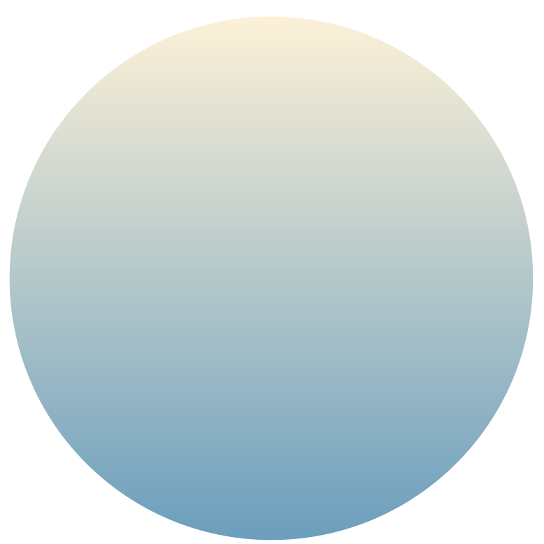
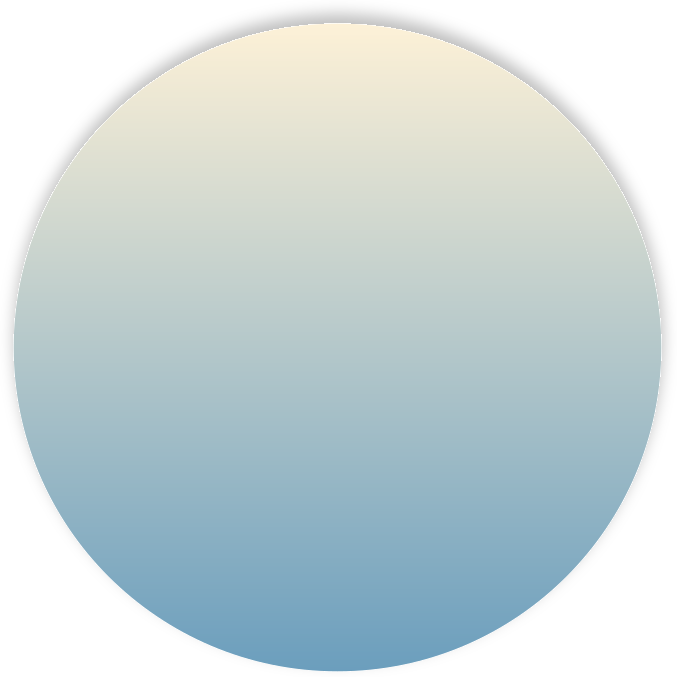
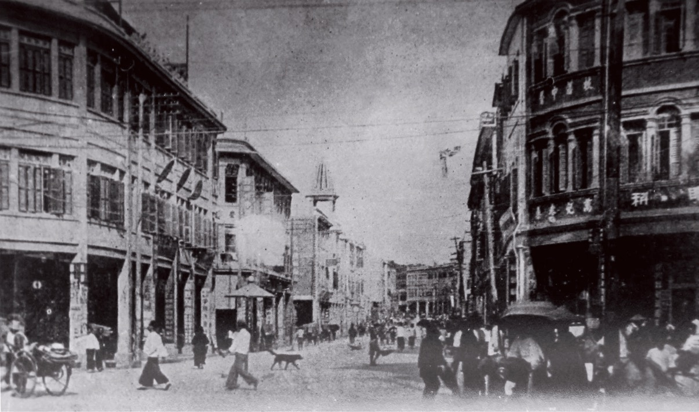
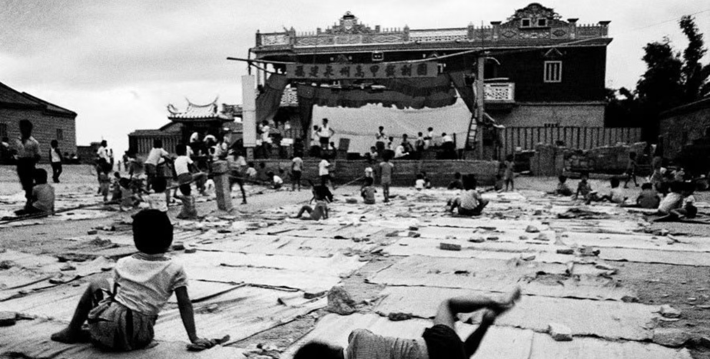
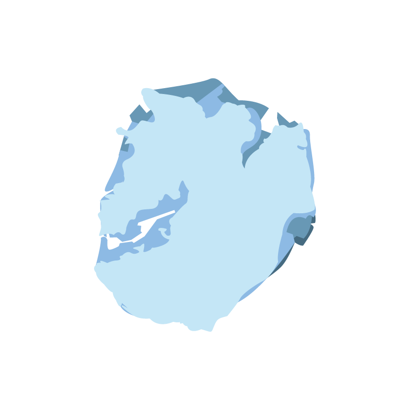
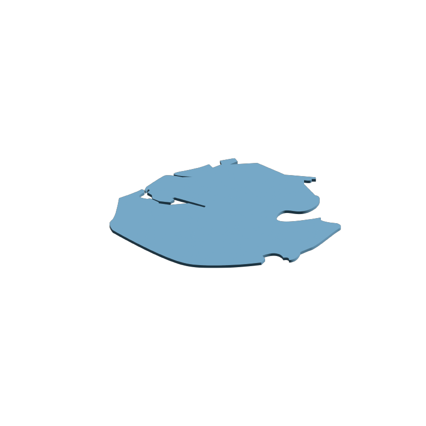

Heard before it is seen
A street vendor's call. A ship's horn. A neighbor's greeting. A sound can leave a place long before its buildings do.




Click Explore to continue the journey.
02 / EXPLORATION
The moon remembers
the life that once was.
A city changes. Explore what arrives, what remains, and what fades.
Choose a crater. Part the surface of time.
Click one of the three small moons to enter a memory.
XIAMEN · A MEMORY ATLAS 01 — 03
Click a small moon to enter its memory.

01 / STREETLIFEStreetlifeCLICK TO ENTER
02 / STAGES & SCREENSStagesEVERY CHANGE LEAVES A TRACE.
BEYOND THE BUILDINGS
A street vendor's call. A ship's horn. A neighbor's greeting. A sound can leave a place long before its buildings do.
The route to the market, shade beneath an arcade, a corner where we waited. Small habits give a city its human scale.
As familiar shops and faces change, we still give directions using old names. Memory keeps another map of the city.
01 / GAINED · XIAMEN
Land drawn from the sea.
Journeys made shorter.
New possibilities in an ordinary day.
01 / LAND & CONNECTIONS
Each shade holds a different shore. Move across the map to illuminate its visible layers.

The designer’s map. Exact dates for its colour legend are awaiting confirmation; the milestones alongside are a separate historical archive.
EARLY LAYER / LIGHT BLUE
1955
The Gaoji causeway linked Xiamen Island to the mainland, carrying roads and rail across the sea.
Economic-zone boundaries, city built-up area and island land area are different measures.
THE EARLIER SHORE
A shore shaped by bays, inlets and the water between.
THE PRESENT SHORE

New land and connections change the island’s outline.
Frame 16 model renders supplied by the designer. These images are shown at a common image scale, not a calibrated geographic scale. Dates and measured area are not inferred from their pixels.
02 / THE SCALE OF CHANGE
Numbers record one part of change. They cannot measure every new opportunity—or every memory left behind.
Selected published milestones, not an annual series. Current-price GDP, not inflation-adjusted. Earlier figures follow the cited publication and may differ from subsequent revisions.
Tertiary-sector share of the city’s GDP.
Goods imports and exports, CNY billion.
03 / EVERYDAY FUTURES
A voice across a distance. A journey across the city. A crossing over water. Click an object to move through its generations.
A brick-sized mobile phone puts a call in your hand, away from a fixed line.
A bicycle makes the neighbourhood a journey measured in pedals.
A sailing boat carries lives and goods across the water that shapes the city.
Stylised 3D studies, not exact historical products. Generations are illustrative; older and newer ways of living continue to coexist.
The city gathers its memories…